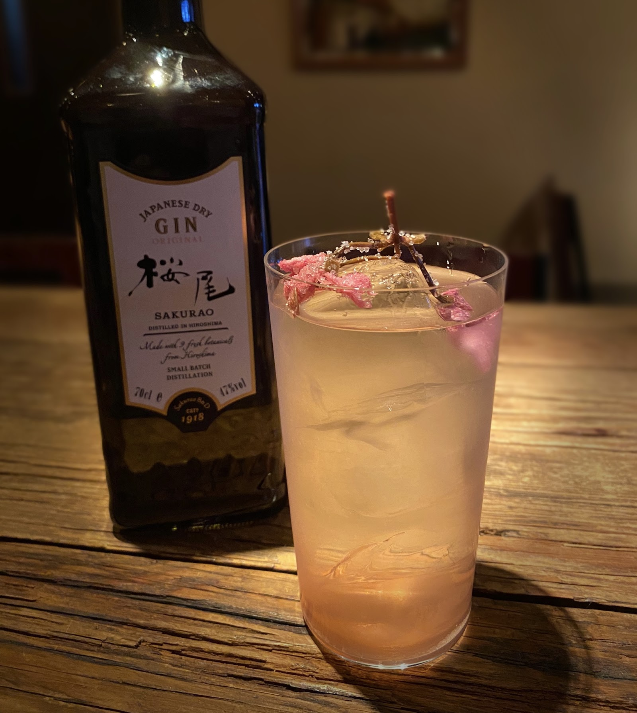
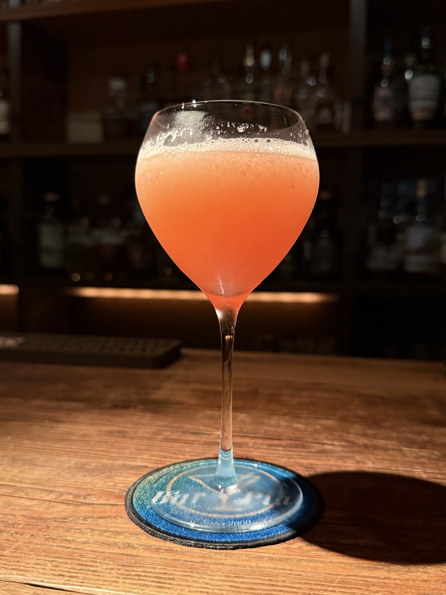
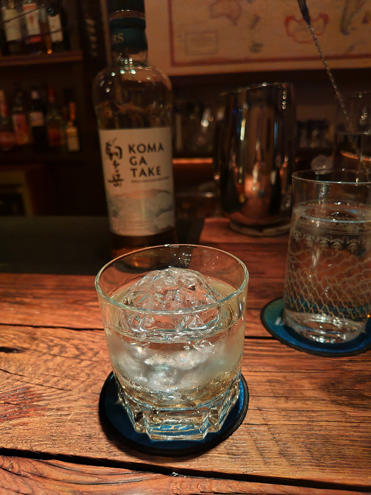

お店のこだわり
柏の街なかにありながら、Bar Platの店内は驚くほど静かです。
落ち着いた明るさの照明と、温かみのある内装。
日常から少し離れて、静かに一杯と向き合う時間をご用意しています。
01

写真提供: Plat Bar
静けさと温かみのある空間
柏駅からほど近い通り沿いにありながら、Bar Platの外観はどこか控えめで、知る人ぞ知る隠れ家のような佇まいです。
一歩中に入れば、暗すぎず落ち着いた明るさの照明と、温かみのある内装が出迎えます。
街の喧騒を忘れて、静かに過ごせる空間が広がっています。
02

写真提供: 佐藤慶臣
バーテンダーと過ごす、カウンターの時間
カウンター越しに、バーテンダーが一杯ずつ丁寧にカクテルを仕上げていきます。
お酒に詳しくない方や初めての方も、気軽にお声がけください。丁寧にお応えします。
仕上がるまでの時間、交わす会話も、Bar Platで過ごすひとときの一部です。
03

写真提供: 田中正一郎
一人でも、誰とでも
女性おひとりでの来店や、女性同士でのご利用でも、気兼ねなく過ごしていただけるよう心がけています。
カップルでのゆっくりとした夜にも、少人数の友人同士の集まりにも、落ち着いた席で寛いでいただけます。